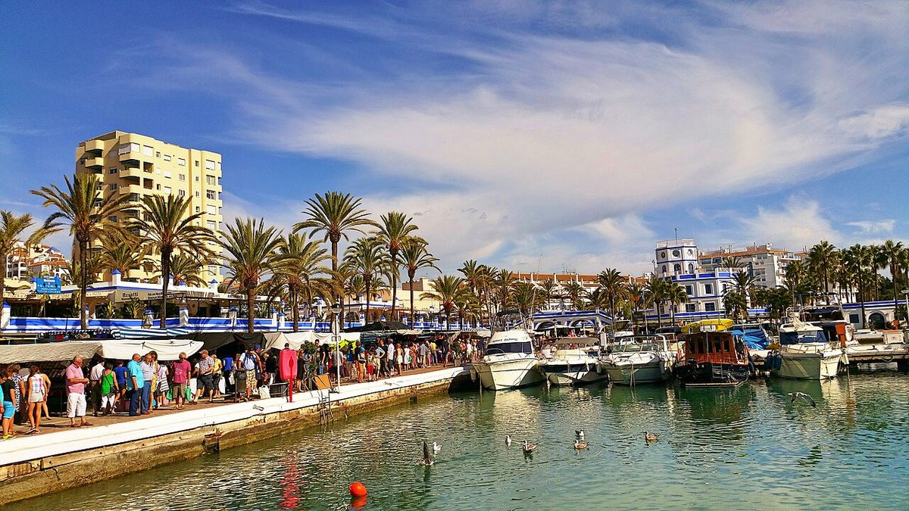

El municipio que cambió · Elecciones: 2004-2023
Manilva, el municipio de España donde más ha caído la izquierda en veinte años respecto a su provincia: del 65,4 % al 36,1 %
En 2004, el PSOE y el espacio de IU sacaban el 65,4 % del voto en Manilva (Málaga). En 2023, el 36,1 %: 29,3 puntos menos, cuando en el conjunto de la provincia la caída fue de 13,9. Es la mayor diferencia de España entre los municipios de más de 10.000 habitantes. En noviembre de 2019, Vox fue allí la lista más votada.
Dato: verificable y reproducible
La pregunta: ¿Qué municipios de la Costa del Sol han cambiado su voto mucho más que su provincia?
La medida
DatoEsta serie no mide cuánto cambia un municipio, sino cuánto cambia más que su provincia. Así se separa la ola general, que afecta a todos, de lo que es propio de cada lugar.
DatoEntre 2004 y 2023, la izquierda estatal (el PSOE más el espacio de IU, Podemos y Sumar) perdió 29,3 puntos en Manilva y 13,9 en el conjunto de la provincia de Málaga. La diferencia, 15,3 puntos, es la mayor de los 770 municipios españoles de más de 10.000 habitantes. Le sigue Los Palacios y Villafranca (−15,1), que el Atlas ya contó en esta serie.
Tres ganadores en ocho elecciones
DatoManilva no ha tenido un ganador estable. El PSOE ganó en 2004, 2015 y abril de 2019; el PP, en 2008, 2011, 2016 y 2023. En noviembre de 2019, la lista más votada fue Vox, con el 31,4 %.
DatoVox ganó aquellas elecciones en 277 municipios de España, 11 de ellos en la provincia de Málaga, entre ellos Estepona, su vecina. En 2023 bajó en Manilva al 21,4 % y el PP ganó con el 40,4 %.
DatoLa derecha (PP, Vox y Cs) pasó del 27,6 % en 2004 al 61,8 % en 2023. En la provincia, del 36,5 % al 54,8 %.
Sus vecinas
DatoCasares, su vecino, siguió un camino parecido aunque partía de más arriba: la izquierda pasó del 74,6 % al 48,0 %. En Estepona, del 56,1 % al 36,2 %.
DatoManilva es también el municipio de la provincia de Málaga con más población extranjera entre los de más de 10.000 habitantes: el 39,0 % de sus vecinos en el padrón, según el INE. En las generales solo votan los españoles; los ciudadanos de la Unión Europea pueden votar en las municipales si se inscriben.
El voto local
DatoEn las municipales de mayo de 2023 la lista más votada fue una candidatura local, «Compromiso Manilva», con el 28,4 %. El PP sacó el 23,2 % y el PSOE, el 18,8 %.
Sobre el terreno
DatoManilva casi triplicó su población en veinte años: pasó de 6.270 habitantes empadronados en 2002 a 17.157 en 2022. Fuentes: 1, 2
DatoAntes del turismo, la caña de azúcar y la viña fueron durante siglos los motores de la economía de Manilva. Fuentes: 1, 2
Lo que no sabemos
- HipótesisPor qué. El crecimiento urbanístico de la costa occidental de Málaga y el cambio de población son las hipótesis más citadas; esta pieza no tiene el padrón por procedencia ni dos fuentes que relacionen esos cambios con el voto.
Los datos
| Municipio | Provincia | Izquierda 2004 | Izquierda 2023 | Cambio | Cambio de la provincia | Diferencia |
|---|---|---|---|---|---|---|
| Manilva | Málaga | 65,4 | 36,1 | −29,2 | −13,9 | −15,3 |
| Los Palacios y Villafranca | Sevilla | 70,7 | 40,9 | −29,8 | −14,7 | −15,1 |
| Guía de Isora | Santa Cruz de Tenerife | 50,8 | 42,9 | −7,9 | +6,8 | −14,7 |
| Pilar de la Horadada | Alicante | 42,5 | 27,5 | −15,0 | −1,1 | −13,8 |
| Almonte | Huelva | 71,8 | 42,6 | −29,1 | −15,7 | −13,5 |
| Pizarra | Málaga | 69,5 | 42,3 | −27,2 | −13,9 | −13,3 |
| Utiel | Valencia | 54,7 | 43,0 | −11,7 | +1,4 | −13,1 |
| El Rosario | Santa Cruz de Tenerife | 46,2 | 40,3 | −5,9 | +6,8 | −12,6 |
| Vegas del Genil | Granada | 63,6 | 38,8 | −24,8 | −13,2 | −11,6 |
| Requena | Valencia | 49,5 | 39,4 | −10,1 | +1,4 | −11,5 |
Ver en el mapa de resultados: Manilva · Casares · Estepona
Método y fuentes
- Qué se compara
- Los 770 municipios españoles de más de 10.000 habitantes, por el cambio de la izquierda estatal entre 2004 y 2023 menos el cambio de su provincia.
- Límites
- «Izquierda» suma el PSOE y el espacio de IU, Podemos y Sumar (con Compromís y Más País). Los datos agregados no dicen quién cambió su voto: un municipio que crece cambia también de votantes.
- Metodología completa
- Cómo se calculan los porcentajes, el modelo, los gemelos y los escaños
- Fuentes
- Ministerio del Interior, resultados electorales por mesa (Infoelectoral). Congreso 2004-2023 vía pollspaindata, commit ee5ecda; municipales 2007-2023 de los ficheros de Infoelectoral
- INE, Atlas de Distribución de Renta de los Hogares 2023 (renta, edad, población), vía ineAtlas.data
- INE, Censo de Población y Viviendas 2021 (estudios, paro, extranjeros)
- Autoría
- Nacho
- Revisión de datos y texto
- Nacho, 2026-10-07
- Publicado · actualizado
- 2026-10-06 · 2026-10-07
- Correcciones
- Ninguna. Historial del Atlas